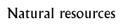

Enquiry Grid 3  |
|
Chapter/s and section/s used: Geography Explore
Individual project: Have pupils spend some time on the Geography Explore part of the site. They should try to understand what all the different types of natural resources were and how the people of ancient India used them.
Discuss what natural resources are, and ask pupils to give examples of natural resources. Have pupils look at the natural resources map in the Geography Explore section and choose some natural resources based on a category such as semi-precious stones, stones or metals. Then ask them to play the Challenge in the same chapter, collecting information about the resources they chose as they play the game. Then ask them to find examples of how the resources they chose were used either on the site or in books. Have them present what they learnt in the form of a poster, map or chart with labels.
Class project: Divide the class into groups and assign a category to each group. Have them look at the natural resources map and find materials that would fit into their category. Then ask them to play the Challenge, collecting information about the resources as they play the game. Then ask them to find examples of how the resources in the category were used, from information found either on the site, or in books. Have them present what they learnt in the form of a poster, map or chart with labels.
Extensions: Ask pupils to find out about other resources that were not native to ancient India. Then, have them collect information about these resources using the site, books, magazines and the internet. Think about different ways of presenting the information, such as reports, newspaper articles or alternative types of map.Alternatively, ask pupils to imagine they are working for a company that makes a product (it could be jewellery, furniture or clothing). Ask them to identify the resources of their own country and neighbouring countries to work out where they would have to get the raw materials to make their product. They could then go on to design the product and produce a plan and advertising for it. Background information: Cities of the IndusHow Indus towns developed Environment Crafts Agriculture Trade
© The British Museum |